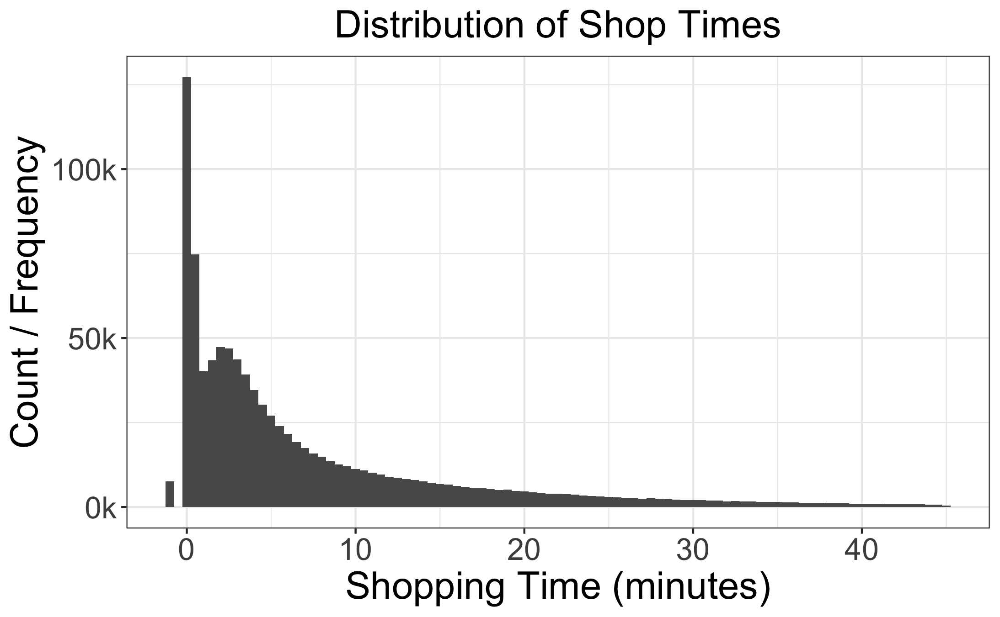
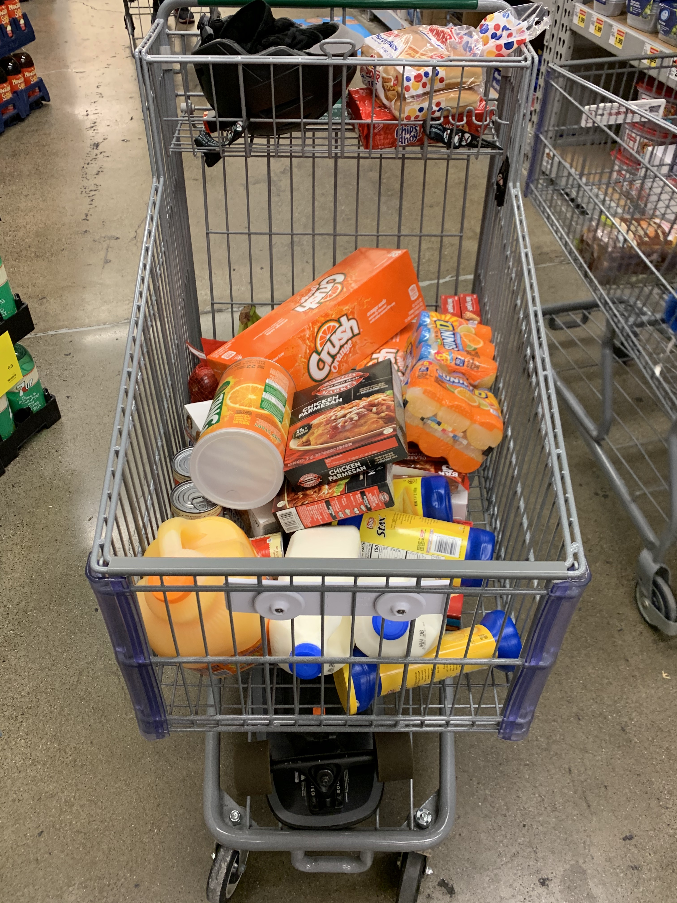
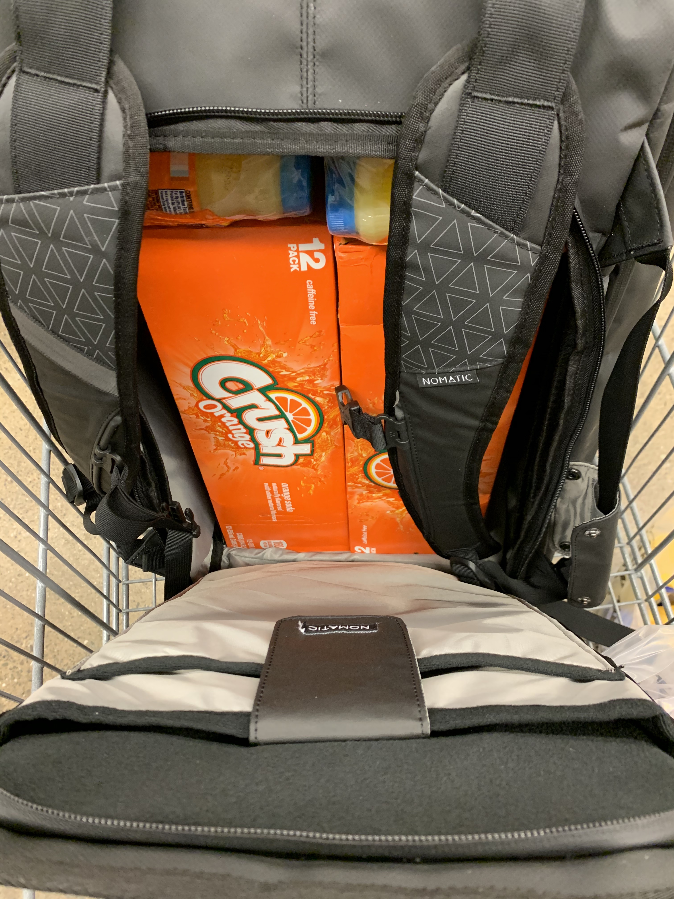
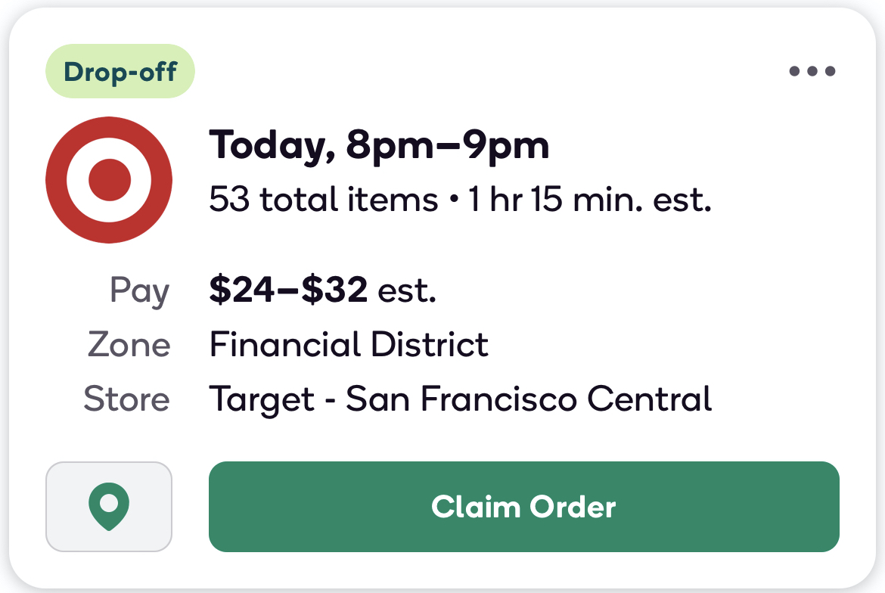
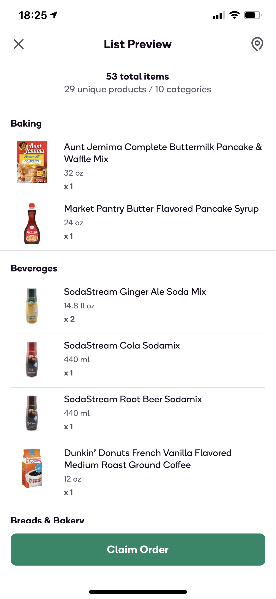
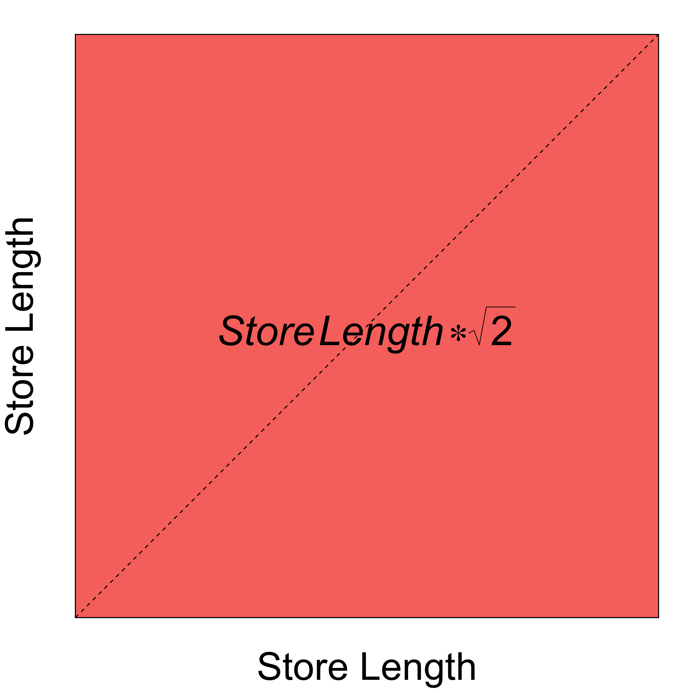

Shop Time and the Area of a Square - Industry Insider Take
How Analytics Drive ML Model Development (in Industry)

Shop Time and the Area of a Square is an article written on July 20th, 2020 for my current employer, a grocery delivery company called Shipt, to articulate how we leveraged data analytics to understand the minimum shop time for finding one item at a retailer. Upon further review, that process has taught me a lot about developing machine learning models in industry. So I’d like to revisit the article with some additional commentary and insights on how Analytics drive ML Model Development (in industry).
From time to time, I enjoy listening to the Lex Fridman Podcast and recently I heard him interviewing Charles Isbell and Michael Littman; for anyone attempting to enter the space and deploy a machine learning model, the clip below is the ML gospel; I hope you enjoy it. 😄
An astute modeler should know that a clever or fancy algorithm can lose or perform equally to a simpler model with superior data.
So if you didn’t know - it’s the data, stupid! Stay close to the data because she’s your friend. The entire interview can be heard/watched here. A Few Useful Things to Know About Machine Learning is another article that I found insightful about the use of data in algorithms and the desired goal of the Data Scientist or Modeler.
Why is Industry Different (Part 1)?
In industry, the data is messy. In academics, not as much. Academic programs at both the undergraduate and (some) graduate levels ignore the Exploratory Data Analysis (EDA) aspect of model development.
In my experience, emphasis is not on the deployment of an advance method or model. As Charles Isbell has said, “the data is almost more important than the algorithm”.
So I’d like to go deeper. Below is the distribution of Shop Times for single-item orders.

There you go - with a few lines of code in both R and SQL - we made a graph. Awesome!
But what do we know about the actual task of shopping from this distribution? Some thoughts (after reading the graph from left to right):
- Some people are really fast shoppers with some data being negative (see the little blip on the left side of the graph)
- The largest spike (aka mode) appears to occur at less than a minute of actual shopping time
- At roughly three minutes we see a peak, followed by decreasing instances of longer shop times
- A very long right tail
I hope that exercise shows the limited nature of seeing data only through the lens of the numbers on a table or graph.
The actual task of shopping an order cannot be understood merely by staring at a graph and hypothesizing about shopper behavior. At Shipt, I am also a shopper. This business is about people, not machine learning models. So I physically did the work.
Giving students curated datasets dismisses how the game is played in reality and leaves a hole in the students’ fundamental training. Sometimes you gotta go into the field and actually do some heavy lifting (or shopping).
So I open the Shipt Shopper app and see an order such as the following:
Figure 1: OG - Order Offer Card
Since I want the experience of working as a professional Shipt Shopper, I skate to Foods Co. and shop a couple orders together. I believe (more seasoned) shoppers refer to these as ‘doubles’. This was a rookie mistake.
You see while shopping in Alabama, I had a car. I’ve since relocated to my companies’ San Francisco office and currently commute via electric skateboard and public transportation such as BART or rideshare (LYFT/UBER).
Shopping a ‘double’ resulted in the following at checkout:


That experience led to some internal discussions about ‘uncovering’ order metadata such as its contents.
In the image below you see two twelve-packs of Crush orange soda and two six-packs of Sunny D. This order was very heavy.

Innovations by the Shipt Product team led to the modern version of the Offer Card where shoppers can now see the underlying order contents via the List Preview.


You see the model development process (in industry) does not consist of:
- Read about a cutting edge algorithm.
- Find some data at work.
- Implement cutting edge algorithm.
- Business makes a lot of money and you get rich.
- Repeat.
The model development process (in industry) consist of:
The Business Problem: What problem are you trying to solve?
The Data: Do you have the data needed to solve the problem? Do you need to create an ETL pipeline for the data?
Data Cleaning and Mining: Not all data is good data. Choose wisely!
- Exploration with charts and graphs is always a winner but conduct some field research.
Baseline: Set the baseline with a simple linear model, benchmark or heuristic.
Feature Engineering: Feature Engineering is domain specific. So know your business and your customer. Also, checkout Max Kuhn’s book, Feature Engineering and Selection.
Repeat: Iterate and repeat steps 4-6 until you find the best performing model versus your benchmark or heuristic.
Deployment: Get it into production.
Anomaly Detection: Model’s decay and drift over time. Automate the detection of anomalies becuase they will happen.
Again, this business is about people and solving problems for them, not machine learning models. To actually understand the problem, I went into the Shopper App and delivered orders for members. I then leveraged that research and those experiences to help me get to know the data, its strengths and weaknesses.
What About Model Performance?
How well should a model perform? As my Econometrics Professor Matt Holt would say, “Depends on your Employer”. If we trained our model on data including possible outliers (on the left end of the distribution) then the model will perform poorly. Suppose you run a bank, under-predicting the model’s target (Shop Times for Shipt) could lead to financial ruin.
Suppose you’re a head coach preparing the team for a track meet or basketball game. As the coach, do you want the athlete that has trained for the event with ten mediocre practices or an athlete with 1000 days of varying forms of practice (shooting three pointers, free throws, layups, etc); The data matters, PERIOD.
When modeling, generalization and representation matters. Stay close to the data and remember, “the data is almost more important than the algorithm.” A clever or fancy algorithm can lose or perform equally to a simpler model with superior data.
With that out of the way, let’s get back to the article…
How long does it take to find one item in a grocery store?
Go ahead and take a guess, I’ll wait… What did you guess - ten, fifteen minutes? When conducting personal shopping such a thought may come to mind while under a time crunch. What if it’s lunch time and you only have 40 minutes to run into the grocery store to grab dinner and snacks before you have to pick up the kids from day care. So how long does it take to find one item in a grocery store? Is that item in the front or rear of the store? Do you need help from a store associate while searching for that one item?
I too wrestled with this question. While working as an analyst for Shipt, I leverage common notions in both geometry and physics to determine which data are useful for a machine learning project that estimates what we call “Shop Time”.
What is Shop Time?
Shop Time is the duration of time from start to finish, that is needed to find an item and checkout. Shipt deeply values it’s relationship with our members and shoppers. Thus, surfacing Shop Time expectations allows a shopper to better plan, be more efficient, and provide an amazing experience for the member.
When developing a model, deciding which data to value is paramount. Data selected to train a model is important as our model predictions will be consumed by our shoppers via what we call the offer card.
Shipt Shoppers can preview an order by looking it’s offer card - a card located in-app that provides order details. The image below is an order offer card from the Shipt Shopper App. The 1 hour 15 minute estimate is not only the shop time but also the drive time; moreover, the order has 53 total items, with an estimated pay of \(24\) - \(32\) tip not included.
Figure 2: Order Offer Card
Identifying Outliers
If we choose data that was poorly captured then model predictions will result in a false signal and wildly varying shop time expectations for our shoppers. Therein lies the tricky part of the problem, the Bias-Variance Trade-Off. Removing too much data decreases our Bias but increases our Variance (aka over-fitting to the training examples).
Why is Industry Different (Part 2)?
In hindsight, while studying economics as a graduate student, this idea was not well articulated. Outliers and bad data can destroy model performance In academics, data sets are generally cleaned such that students can quickly get up to speed on the methods and algorithms but more time should be devoted to Exploratory Data Analysis (EDA) and proper Outlier identification and Removal.
The explain vs predict paradigm has lead to this dynamic. Economists love to explain relationships and thus seek an optimal fit that can best explain market behavior; an economist might argue, “It’s all just statistics.” In return, the ML modeler might argue that if the goal is accurate predictions then the explanation is not a relevant concern; thus, they demand generalization.
It is true, a proper model must generalize well to new data. In this case, we started the data selection process by determining reasonable lower bounds for Shop Time. Additional resources/literature on this topic can be found by reading Inference vs Prediction or A Balanced Perspective on Prediction and Inference for Data Science in Industry.
Let’s get back to the article….
In physics, there’s a well known mental model called First Principles Reasoning. Thinking via First Principles allows a person to start from scratch while questioning every known assumption about a specific domain, then building a new (hopefully innovative) solution based upon new thinking about those assumptions.
A strong analyst should have many tools in the toolbox, reasoning by First Principles is one such tool. After thinking deeply about a reasonable floor, one should consider the most basic order type, an order (smallest possible) with only one item. We’ll call the associated shop time for a single-item order the Minimum Shop Time.
So how long does it take to find one item in a grocery store? If you guessed 10 minutes, then I need you to explain why. As my friend Maliha would say, “In God we trust. All others must provide data.” This the art of Data Science.
In order to create a model that has high value impact for a business, a modeler should start by framing the problem in the most basic form, build an understanding of the limitations of the data and then find the balance between signal and noise (or Bias and Variance) for your target.
In a perfect world, all data collected would correspond perfectly to the timestamps of the user interaction within the app. However, weather, buildings and associated natural interference leads to suspicious data captured in the system.
We’ve observed outliers such as shop times that are negative, null, less than one minute, or – on the extreme right – up to 12 hours. To develop a model that reasonably represents the actual task of shopping, we had to consider the minimum time it takes and remove recorded data that may be incorrectly captured by the system.
Below is the distribution of Shop Times at Shipt for single-item orders. This graph has been enhanced with a line to delinate possible outliers and colorized.
Figure 3: Our database captured hundreds of zero or negative shop times.
Grocery Shopping Axioms and Theory
If you studied mathematics, you have probably heard of Euclid’s Elements. Euclid’s Elements is a set of books attributed to Euclid of Alexandria, around 300 BC. During that time, Euclid’s Elements were considered a bible of sorts for mathematics. His theories on Number Theory and Geometry are considered fundamental to a proper mathematics education. Moreover in mathematics, understood truths are called Axioms and Postulates. Here we present our Elements (Axioms and Postulates) for Grocery Shopping:
An order for delivery has a minimum of one product and one item (Shipt refers to this as an order line - similar to a line item on a receipt)
Shop Times are positive, real numbers, \({\rm I\!R} ^ {+}\)
As number of products and total items requested increases, so does the duration of time to shop
Note: This article attempts to narrow the focus of number two; meaning we’re really interested in understanding which data to value for training examples. For additional reading on the Data Valuation and Quality, read some on Data Shapley.
We have data about the area (or size) of stores that we service. Moreover, we can leverage that information along with member feedback to develop a model that reasonably estimates the time it takes to shop a single-item order.
In order to meet or exceed delivery expectations, an experienced shopper will maximize their time by:
Shipt Members assume and expect the following:
- Arriving at the store early
- When appropriate, communicating order issues quickly
- Delivering all requested and available products on-time
Let’s suppose you’re a shopper who received our Minimum Shop Time order. Ok, you have an easy order. It’s only one item. What could go wrong? Well, what if the item is in the back of the store? How long might it take you to get there? How could you minimize this time?
Why is Industry Different (Part 3)?
I think the dynamics of real world liability is something that is a miss in academic programs; meaning - what is at risk? In predicting shop times, we’d prefer to over-predict than under-predict. If you drive an autonomous vehicle, would you prefer the system over-predict, have a false positive and stop prematurely or under-predict, have a false negative and stop too late?
If designing an ABS system that uses computer vision to calculate crash probabilities mid-drive, you’d prefer the system stop early, a false positive, than late or not at all. These dynamics take the problem from ‘fun exercise’ to:

All funny gifs aside, let’s get back to the article…
Let’s assume the store’s perimeter is that of a rectangle, particularly a square, and that information regarding the size of the grocery store is known.

If you remember from grade school, the area of a square is:
\[ \mbox{(Equation I.)} \substack{\text{Area} \\ \text{of a Square}} = (\mbox{Length of the Side}) ^ {2} \]
Furthermore, via the Pythagorean Theorem, the length of the diagonal is:
\[ \mbox{(Equation II.)} \substack{\text{Length of the Diagonal} \\ \text{of a Square}} = \mbox{Length of Side} * \sqrt{2} \]
By taking the square root of (Equation 1), (\(\sqrt[]{(\mbox{Length of the Side}) ^ {2}}\)), we now have a way to determine the length of the side of the store; more importantly, the shortest possible distance through the store - a straight line!
Obviously, this violates the laws of reality, a shopper likely cannot traverse the diagonal of a grocery store; but, it provides an important insight that we will leverage when we select the data for our model.
Finally, if there was a way to relate this distance and time then we could evaluate the earlier guess.
Physics: Insert {Equations of Motion}…
In physics, equations of motion are equations that describe the behavior of a physical system in terms of its motion as a function of time (i.e. how fast can a Shipt Shopper cross a distance). Let’s leverage the rate, time, and distance relationship of
\[
\mbox{Walking Pace} * \mbox{Shop Time} = \mbox{Distance Traveled}
\]
\[
\mbox{By division, Shop Time} = \frac{\mbox{Distance Traveled}}{\mbox{Walking Pace}}
\]
Additional functional forms may include the following,
\[ \substack{\text{Shop} \\ \text{Time}} = \frac{\sum{\mbox{Distance Traveled}}}{\mbox{Walking Pace}} + \frac{\sum{\mbox{Items in Order}}}{\mbox{Item Identification Pace}} + ... + \epsilon \]
where \(\epsilon = \mbox{unexplainable error}\)
A human walks at roughly 3.1 Miles per Hour. After converting to feet per minute, we get 272.8 feet per minute.
…So what’s your point?…
Since we know the distance to the rear of the store and our walking pace, we now have a way to determine if our time to shop guess was reasonable.
We can now flag Shop Times in our data that are below the computed Minimum Shop Time threshold.
\[ \mbox{Definition,} \substack{\text{The Minimum} \\ \text{Shop Time}} \approx \frac{\sqrt{2*\mbox{Area of a Store}}}{136.4 \frac{feet}{minute}} \]
Why is Industry Different (Part 4)?
This is a simple ‘model’ filled with unrealistic expectations, right? That’s not the point of this discussion. Might - It’s the data, stupid! A simple model with superior data can outperform a more clever model with noise.
In graduate Econometrics courses we learn about parsimony and our preference for simpler, highly performant models. However, those models are only performant if the data is properly optimized for the correct signal. Finding that optimal signal is both an art (specific to the domain) and a science (the computational and quantitative methods) used to find signal.
Getting ML training with clean data is lovely but the art of machine learning is understanding your domain and engineering solutions that a databot can not. This requires strong analytics and possibly going into the field and physically doing the work.
Framework/Model Assumptions and Limitations
Our model is not perfect. It makes assumptions about a shopper’s ability to walk, locate an item and checkout. These assumptions are as follows:
Our model assumes the worst possible case for an item’s location — an item is located in the rear corner of the store opposite the shopper’s entrance.
The shortest possible path to the rear of the store can be traversed via the diagonal; a shopper’s ability to enter the store and walk to the rear via the diagonal (a straight line) represents the optimal path to the rear of the store.
We assume there are minimal impediments to the shoppers ability to walk at the average speed (walking pace of human is assumed).
Finally, we assume a shopper can locate an item that is stocked, pay the cashier, and walk out of the store unencumbered; meaning, at this point we are leveraging this model to gain insight about shop time.
Despite violating the physical properties of a store (i.e., a shopper cannot walk through the aisles of a store via the diagonal), this model provides an insight into reasonable Shop Time expectations for a shopper who is fulfilling a single-item order. For all larger orders, we expect larger Shop Times (Axiom 3); thus, Shop Times recorded below the threshold for all order sizes will be marked as potential outliers.
Closing Thoughts and Reflections
When attempting to model a complex world, sometimes it makes sense to keep your thinking simple. Here we developed a simple model to approximate the time to shop a single-item order. We are now able to use the equation and flag all orders for removal with shop times before the computed threshold for our training set. Let’s end with an example:
A typical small-size format Target is about 40,000 square feet (full-size \(\approx\) 130,000 sq. ft.). That means we should expect the minimum Shop Time at a small-format Target to be
\[ \substack{\text{Target (small-size format)} \\ \text{Minimum Shop Time}} \approx \frac{\sqrt{\mbox{80,000}}}{136.4 \frac{feet}{minute}} \approx \mbox{2 (or 2.09) minutes} \]
\[ \substack{\text{Target (full-size format)} \\ \text{Minimum Shop Time}} \approx \frac{\sqrt{\mbox{260,000}}}{136.4 \frac{feet}{minute}} \approx \mbox{4 (or 3.78) minutes} \]
We can now remove all data below these computed thresholds. Amazing how a simple model can have profound impact on one’s thinking.
Never say you’ll be back in a minute!
Please feel free to leave a comment below. 😄
-V